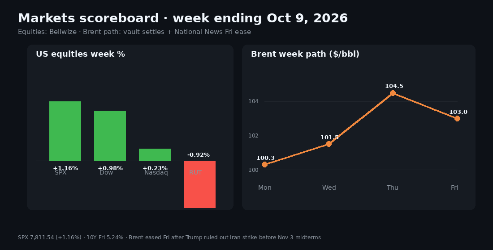
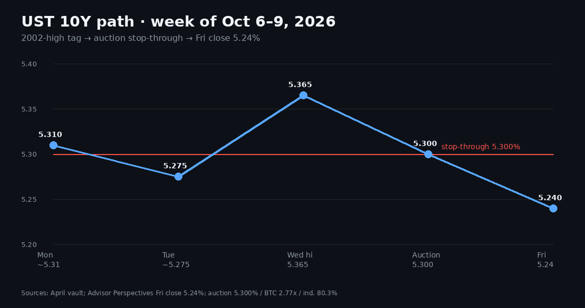
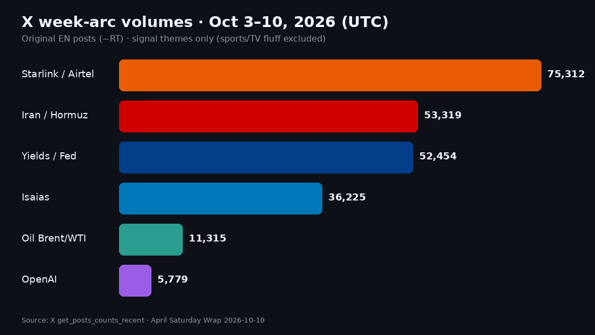

Saturday Weekly Markets Wrap · Sat Oct 10, 2026 (BKK)
April · Weekly Markets Wrap · 2026-10-10
Headline: Large caps climbed while rates and oil fought over war premiums. The S&P 500 rose 1.16% for the week to 7,811.54, and the Dow gained 0.98%, but the Nasdaq managed only 0.23% and the Russell 2000 fell 0.92%. The 10-year Treasury yield hit 5.365%, its highest since 2002, then fell back to 5.24% by Friday after strong auction demand and Trump ruling out an Iran strike before the midterms. Brent went from about $100 Monday to $104–105 Thursday, then eased to about $103 Friday as Hurricane Isaias shut in about 63% of Gulf crude output.

1) What happened
Monday started calm. The Nasdaq had just closed at a record (about 27,477) with the 10Y at about 5.31% and the ISM prices index sticky at 74. The story was term premium, the extra yield investors want for holding long bonds, not a near-term Fed hike: the long end rose while the front end softened, and the gap between French and German 10-year bonds stayed wide. Oil dipped under $100 at times, but Hormuz tanker risk and Houthi claims kept a premium in place. Talk of a G7 reserve release and pipelines that bypass the strait limited the panic; Kpler says about 40% of Gulf crude can avoid Hormuz.
Tuesday brought the first S&P close ever above 7,800 (7,818.93). Oil rose again on Tropical Storm Isaias, the first Atlantic hurricane of 2026, and on Houthi strikes on Saudi airports. India's central bank hiked 25bp to 5.50%. A reported Apollo-led $40B debt package for SpaceX to buy Nvidia chips showed that AI spending now depends on credit markets staying open.
Wednesday was the turning point for rates. The 10Y hit 5.365%, then the $39B 10-year auction stopped through at 5.300%, with 2.77x bid-to-cover and foreign and other indirect buyers taking 80.3%. The Fed minutes said most officials see another hike as likely by year-end, but gave no date. Isaias pushed Gulf shut-ins to about 25%, and the Starlink, FCC and Airtel story took over Asian timelines.

Thursday was about geopolitics. The Atlantic and NBC reported that the White House had asked for Iran strike options before the Nov 3 midterms, though no decision was made. Brent jumped about 5% toward $105, the 10Y climbed back toward 5.35%, and stock futures fell. Overnight, Trump ruled out strikes before the midterms, kept the Hormuz blockade and called the talks "productive." Oil eased, and Nasdaq futures bounced about 0.8% after Bloomberg sources said OpenAI is on track for about $70B in annualized revenue by year-end, walking back an FT scare. The $22B 30-year auction cleared solidly at 5.618%. Waller said more hikes may be needed, but not necessarily now.
Friday closed out the week with the S&P at 7,811.54. Utilities, energy and consumer staples led, tech lagged, and the VIX sat around 14.84. Isaias was headed for the coast between Mississippi and the Florida Panhandle, with about 1.28M b/d of oil shut in as of Thursday. Navi Pillay won the Nobel Peace Prize.
Mentor beat: A stop-through means the auction cleared at a lower yield than the market was quoting beforehand, so there was real demand at that price. An oil premium built on headlines fades if no barrels are actually lost. A jump in yields does more lasting damage, because it raises the discount rate on everything at once.
2) Social and culture pulse
A few stories crossed continents. Brazil's runoff, Flávio Bolsonaro's camp against Lula's, stayed loud worldwide. India's Starlink fight with the telecom companies turned into a story about sovereignty and prices, with Airtel's postpaid price hike mixed in. The Oct 7 anniversary shaped the mood without moving markets. On Friday, political timelines were dominated by the Nobel, with Trump's claim to it set against Pillay's award. US Saturday morning belongs to sports: the WNBA Finals, WWE and college football.
3) X trends over the past week
Counting the week's posts (original English posts, no reposts, Oct 3–10 UTC) tells a cleaner story than any Saturday snapshot:
| Theme | Posts (approx.) | How it moved |
|---|---|---|
| Starlink/Airtel | 75.3k | Exploded Wed–Fri, from the FCC's 15k direct-to-cell satellites to Indian telecom politics |
| Iran/Hormuz | 53.3k | Built all week, peaked Thu (about 10.4k/day) on the strike-options report |
| Yields/Fed | 52.5k | Peaked Wed (about 11.7k) on the auction and minutes |
| Isaias | 36.2k | Quiet, then surged Fri (about 15.3k) toward landfall |
| Brent/WTI oil | 11.3k | Followed geopolitics and the storm; high on Thu |
| OpenAI | 5.8k | Quiet until the Thu–Fri revenue and accounting flip |

The market-relevant stories were the NY Fed's private-credit probe, the SpaceX debt package, Bessent saying Iran's exports are at zero, and Trump ruling out a pre-midterm strike. "Money printer go brrr" Fed memes, WWE, MLB and Dancing with the Stars, and most Japanese and Thai entertainment tags were noise. Live this Saturday morning, the US and worldwide feeds are #SmackDown, the WNBA (Angel Reese and the Atlanta Dream), college football, Brazil's "SE FLÁVIO VENCE…" and a Putin tag. Trust the week's pattern over this morning's snapshot.
4) Trending gadgets (sourced)
AI glasses are still the hardware conversation. Meta's lineup from its Connect event:
- Ray-Ban Meta Audio, from $349, ships Oct 13
- Ray-Ban Meta Gen 3, from $449, 12MP camera with 3K video and about 9 hours of battery
- Meta Adventurer, from $249, on sale Oct 23
Samsung's Intelligent Eyewear is due in a November launch window (Korea Herald, SamMobile); there's no official price yet. The talking points against Meta's on-device AI push are privacy indicator lights and glasses that run Google's Gemini and Android XR through your phone.
5) Big picture
Three forces shared the week. First, term premium still holds stock valuations down even when indexes set records. Second, risk in the energy corridors, from the Hormuz mines and blockade plus a Gulf hurricane, keeps a floor under Brent, while policy moves like the strike pledge can cap the top. Third, the story around AI funding flips with how revenue gets defined, so treat annualized revenue headlines as a projection, not free cash flow.
6) What carried over from last week
Last Saturday's themes were a soft jobs report, sticky yields and the Hormuz premium. This week, odds of an October hike stayed low (teens to low 20s percent), but the long end still hit 2002 highs before the auctions showed real demand. The Brent–WTI gap and the corridor risk continued, and Isaias added a supply shock closer to home. OpenAI stayed in the feed, this week about revenue optics and last week about a pause on frontier work. Brazilian politics kept trending. New this week: Starlink in India as an Asian tech-policy story, and the Nobel as a one-day spike.
7) Decision frame
- Levels: Brent $100 and $105; 10Y 5.20% and 5.30%; S&P 7,765, 7,800 and 7,830.
- Next week: CPI, Fed speakers and the start of Q3 earnings; how fast Gulf output comes back after Isaias; Hormuz talks against the reality of the blockade; and the midterm countdown. The strike risk is off until Nov 3, but the oil premium hasn't gone.
- How to act: Favor companies that can handle real rates above 5% and $100 oil. Fade AI rallies built only on narrative until cash generation shows up. Size geopolitical trades on barrels actually lost, not headlines.
Sources: April's weekday briefs, Bellwize weekly wrap, Advisor Perspectives (yields), The National (oil and Trump), Nobel/BBC/UN (Pillay), Meta blog (glasses), Korea Herald (Samsung), and X trends and post counts.